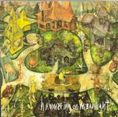

| Artist: | Random Touch |
| Title: | Hammering On Moonlight |
| Label: | Road Noise Productions RNP53862 |
| Length(s): | 60 minutes |
| Year(s) of release: | 2002 |
| Month of review: | [10/2002] |
| 1) | Crazy In Blue | 9.41 |
| 2) | Drunken Parade | 4.23 |
| 3) | Metallic Atoms In A Cloud Of Gas | 2.59 |
| 4) | Wall To Wall Shadows | 4.24 |
| 5) | Getting Your Way | 3.49 |
| 6) | The Deepness Of Things | 4.47 |
| 7) | Hammering On Moonlight | 7.28 |
| 8) | Sounds Like Fun | 1.37 |
| 9) | Moonlight In My Veins | 9.30 |
| 10) | What Do You Mean When You Wonder? | 6.07 |
| 11) | Fat Daddy-O | 5.29 |
Drunken Parade restores the memory of the sort of stuff David Sylvian did with Fripp and his former Japan colleagues. Once again more atmospheric than melodious.
Metallic Atoms has stronger stabilizing key hisses, but can't hide the oddball feel of the music.
Wall To Wall Shadows is a story told in a drawl, fittingly accompanied.
Getting Your Way is gently experimental: despite the cacophony created, there's no abbrasiveness, even a happy feel.
The Deepness Of Things is more tranquil, serious, atmospheric.
The title track is surprisingly neurotic.
Moonlight In My Veins starts pretty jazzy, based as it is on the classical combination of bass, drums and piano. As the track progresses it moves into less calm waters, gaining momentum while moving towards mayhem.
with What Do You Mean we have moved into the realm of pure experimentalism. Not as good as what's gone before. Closer Fat Daddy-O neatly follows this, although its build towards turmoil takes things even further.